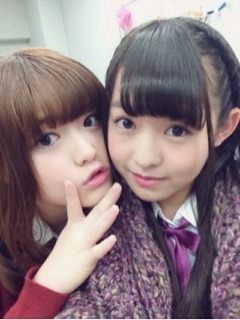

| 2012/12 21 Fri | 323回目*marika |

「ま...りんごすきとかキャラやしな」
...て、あれ？
空耳かな？
......知らない知らない
聞こえてない聞こえてない

**********
 最近なににハマってる？
最近なににハマってる？
 COOKPAD見ること
おかぱって何だと思うー？
ん？おかぱ...？
COOKPAD見ること
おかぱって何だと思うー？
ん？おかぱ...？
おかっぱ？？ん？
クリスマスいつも何処で
過ごしますか？
家で家族と
 メンバーの前でみんな普通に自撮り
メンバーの前でみんな普通に自撮り
するの？(・ω・)恥ずかしくない？
なんかね、慣れると
自撮りしてるのは
普通の光景なんだよね笑
私も気にせず撮ってる

ははは！アイドルってすごいな！
まりっか的今年の
流行語大賞って何だ?
＼アメイジング／でしょう！
最後の写真のまりっかはすっぴん？
そうです。
ふはは...
写真加工ってすごいなあー！←ぁ
後輩に何て呼ばれたい？？
え！わからん！
な、なんでもいい！！
さん付けなんて違和感マックスだ...
バレエの後輩ちゃんからは
まりかちゃんだったなあ

ブログ書くのに
どれくらいの時間かかる？
時間があったらちょっとずつ
書いてるので...どれくらいかは
日による！
最近お買い物行った～？
ちょくちょく買ってるけど～...
がっつり買ってないな。
また古着屋行きたいです
お団子は、あんことみたらし
どっちが好き？(●´ω｀●)
お団子にはあんこです！
でも一番好きな豆類は
だ い ず ！！←
**********
☆☆☆
19日に発売された
制服のマネキン
なんと...
オリコンデイリーチャート1位！
ありがとうございます><
☆☆☆
明日は乃木ここの収録～
うふふ～めっちゃ久しぶりじゃ！
リハも頑張るぞっ

 まりっ会のみなさーん
まりっ会のみなさーん
突然だけど
写真のリクエスト応えます。
例えば...
自撮りでこんなポーズしてほしい。
こんな髪型で撮ってほしい。
メンバーとの2ショ撮ってほしい。
みたいなのあれば、
ちょっとずつでも載せたいなあ。
コメント待ってるよー
げへ
げへ
ではおやすみなさい
まりか
コメント(292)
2012/12/21 00:00